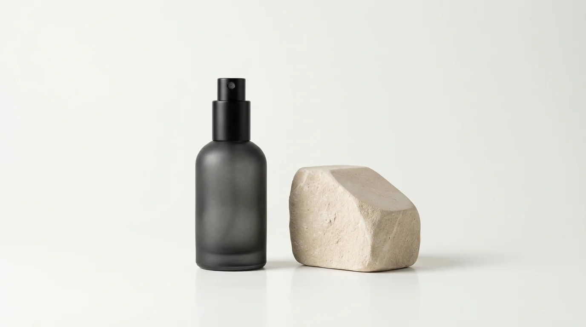
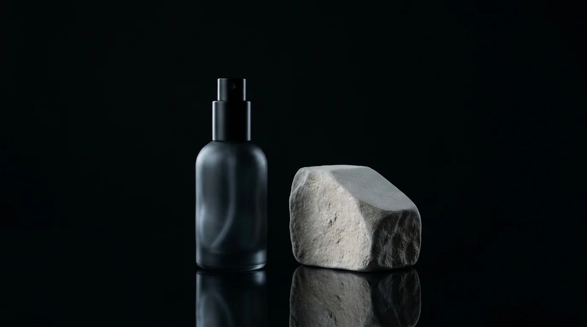

Schonend auf Naturstein
pH-neutrale Pflegelösungen bewahren Travertin, Marmor und matte Designoberflächen ohne Auslaugen.
Experimentelles Scrollytelling-Konzept mit eigener generierter Fotografie und Licht-Variationen: scrollen Sie langsam durch den Tag — vom kühlen Morgenlicht bis zur Abendruhe.

pH-neutrale Pflegelösungen bewahren Travertin, Marmor und matte Designoberflächen ohne Auslaugen.
Fein abgestimmte Mikrofaser- und Glasverfahren verhindern Grauschleier im harten Sonnenlicht wie bei Nacht.
Immer dieselben Ansprechpartner kennen Ihr Gebäude vom Eingang bis zum Besprechungsraum.


Ruhige Arbeitsatmosphäre durch systematische Reinigung außerhalb Ihrer Geschäftszeiten.

Verlässliche Kontaktflächen-Pflege für ein rundum gepflegtes Gefühl im Wartezimmer.
Tiefenreiner Durchblick für Schaufenster, Glasachsen sowie Kalkstein- und Parkettböden.
Aschaffenburg & direkte Umgebung · 0 € Erstbesichtigung direkt mit Inhaber Thomas Charistes.
Alle Quadratmeter, Materialien und gewünschten Reinigungszeiten glasklar am nächsten Werktag kalkuliert.
Eingearbeitetes Stammpersonal, abgestimmte Öko-Mittel und direkte Erreichbarkeit ohne Callcenter.
Nach der gemeinsamen Begehung wissen Sie am folgenden Werktag exakt, womit Sie planen.
Persönlich vor Ort in Aschaffenburg.
Biologisch abbaubar & materialschonend.
Büro, Praxis, Glas, Unterhalt, Grund & Sonder.
Dies ist der interaktive Scrollytelling-Prototyp mit eigener KI-Bildserie für Serreos. Möchten Sie eine unverbindliche Begehung vereinbaren oder wieder auf die finale Hauptseite zurückkehren?